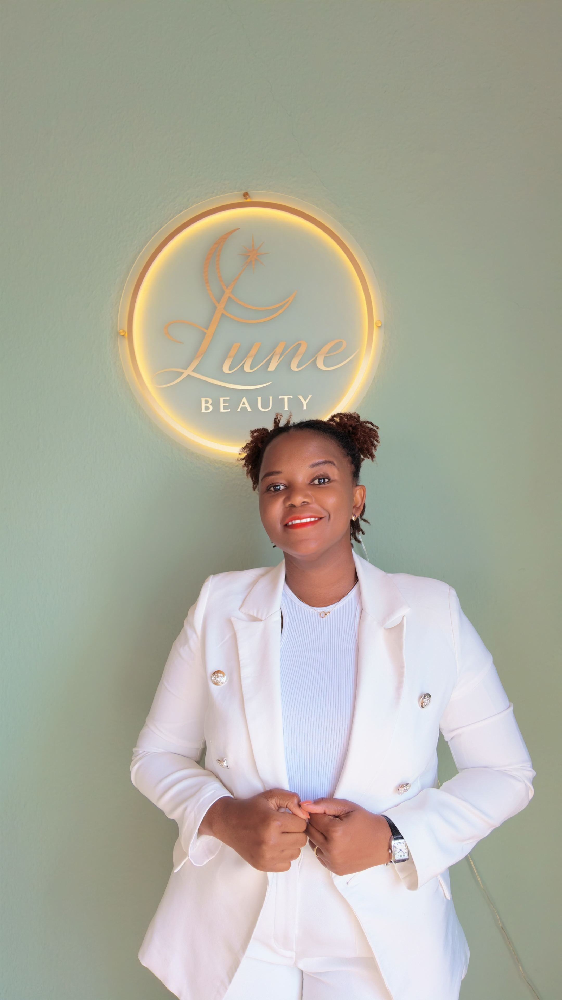
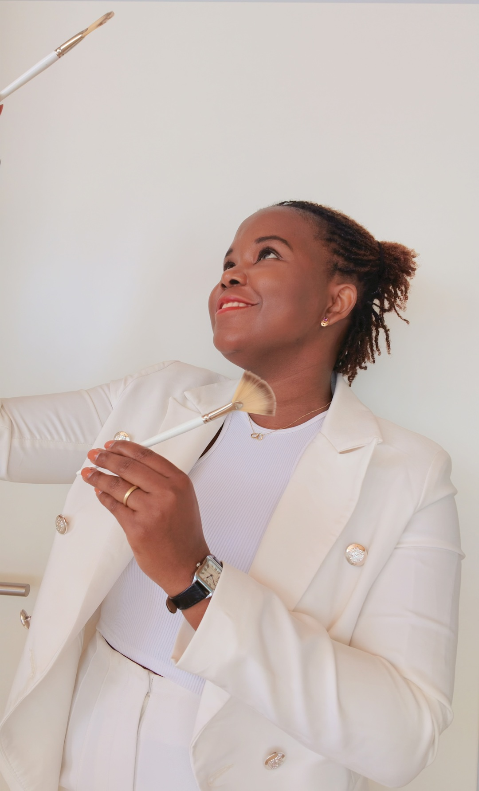

Ich bin staatlich anerkannte Kosmetikerin, Make-up-Artist und Hair-Stylist. In den vergangenen Jahren durfte ich in verschiedenen renommierten Kosmetikstudios in Deutschland und Frankreich wertvolle Erfahrungen sammeln.
Diese internationale Praxis hat meine Arbeitsweise geprägt: eine Verbindung aus präziser Fachkompetenz, ästhetischem Feingefühl und einem tiefen Verständnis für die Bedürfnisse unterschiedlicher Hauttypen. Jede Behandlung soll nicht nur die Haut verschönern, sondern auch Ruhe, Wohlbefinden und ein Gefühl von Ankommen schenken.
Heute setze ich meine gesamte Expertise in Worms ein, mit dem Ziel, einen Ort zu schaffen, an dem Qualität, Achtsamkeit und echte Hingabe spürbar werden. Lune Beauty ist mein persönliches Herzensprojekt, ein Studio, das ich mit viel Liebe und Sorgfalt aufgebaut habe.
Ich freue mich darauf, Sie persönlich kennenzulernen und Ihnen ein Behandlungserlebnis zu bieten, das lange nachklingt.

Lune Beauty steht für eine Hautpflege, die über reine Behandlung hinausgeht. Jede Anwendung verbindet moderne, wirkungsvolle Methoden mit einer Atmosphäre, die Ruhe, Wärme und echtes Wohlbefinden schenkt. Als staatlich anerkannte Kosmetikerin mit internationaler Erfahrung vereine ich präzise Fachkompetenz mit einem tiefen Verständnis für die Bedürfnisse unterschiedlicher Hauttypen, für Ergebnisse, die sichtbar sind und sich spürbar gut anfühlen.
Mein Studio in Worms bietet Gesichtsbehandlungen, Anti-Aging, Aquafacial, Maniküre, Pediküre und individuelle Beauty-Konzepte, immer mit dem Ziel, natürliche Schönheit zu betonen und die Haut langfristig zu stärken.
Lune Beauty ist die richtige Wahl für alle, die Wert auf Qualität, Achtsamkeit und echte Fachkompetenz legen.
Lune Beauty befindet sich im Herzen von Worms und bietet moderne Kosmetikbehandlungen für Kundinnen aus Worms, Pfeddersheim, Hochheim, Abenheim, Herrnsheim und dem gesamten Rhein-Neckar-Raum; einschließlich Lampertheim (mit Hofheim und Rosengarten) sowie Frankenthal.
Ich arbeite mit hochwertigen Produkten und lege großen Wert auf eine Beratung, die individuell auf Ihre Haut und Ihre Wünsche abgestimmt ist.
Lune Beauty ist die ideale Adresse für Gesichtsbehandlungen, Anti-Aging, Aquafacial, Maniküre und Fußpflege in Worms; ein Ort, an dem Schönheit, Entspannung und Qualität zusammenfinden.